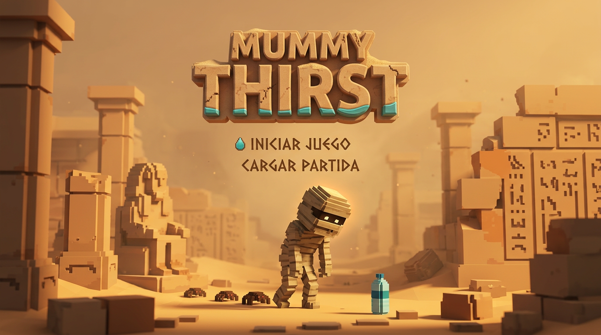

MUMMY
THIRST
AVENTURA 3D VOXEL EN EL DESIERTO EGIPCIO
Image Campus • Antigravity 3D Voxel Edition

La momia tiene una sed inmensa. Encuentra y recoge 10 BOTELLAS DE AGUA en cada nivel para saciar su sed y abrir el camino al siguiente nivel.
Empiezas con hasta 5 vidas. Si una araña te pica, pierdes 1 vida. ¡Pero cada 3 botellas recogidas recuperas +1 vida!
Pequeñas arañas patrullan las ruinas y te perseguirán si te acercas. Presiona ESPACIO o el botón ATACAR para destruirlas con un giro.
Las arañas del desierto te han derrotado. ¿Deseas volver a intentar este nivel?
¡Has recolectado las 10 botellas de agua!
¡Felicitaciones! Has completado los 10 NIVELES de Mummy Thirst. Las ruinas milenarias han revelado el Manantial Eterno y la momia ahora reina satisfecha y refrescada.